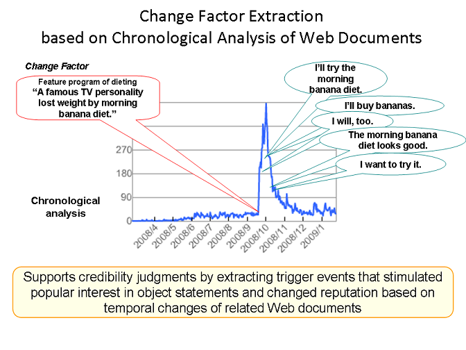
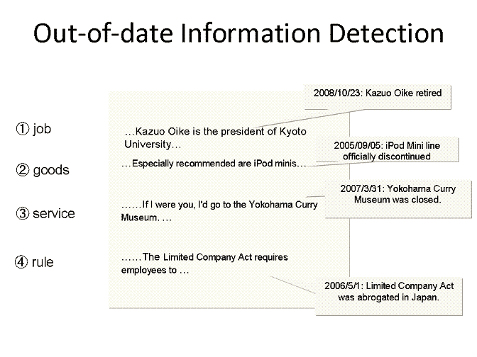

Evaluating Credibility of Web InformationSubject-B: Research on Temporal Analysis of Semantic ContentsNEC[English|Japanese]
9/1/2009
Chronological Perspective (NEC)NEC is developing two technologies based on the temporal analysis of Web pages related to input statements:
Change Factor ExtractionOur purpose is to detect changes in people's opinions and extract such factors by chronological analysis of Web pages. For example, a user interested in diet A inputs, "diet A is effective." Then our system presents a feature on a TV program that reports that "A famous TV personality lost weight on diet A" as a factor to change the opinions that convince many people to believe that diet A is effective. The system reveals the obscure causes of opinion changes and allows users to judge the credibility of opinions based on the background reasons that justify them. |
|  |
Out-of-date Information DetectionOur system supports user credibility judgments by detecting statements that involve old and invalid objects. Such objects are accurately detected by extracting arguments that represent their invalidity and analyzing the temporal changes of arguments related to the objects on Web pages. This out-of-date information detection method prevents users from trusting old and invalid information. |
|  |
Publication
|